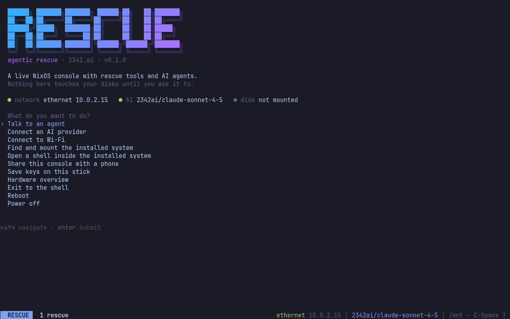
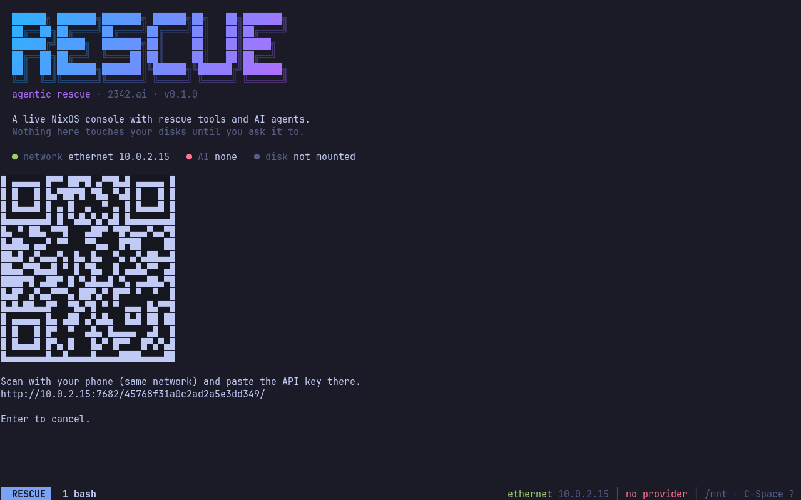
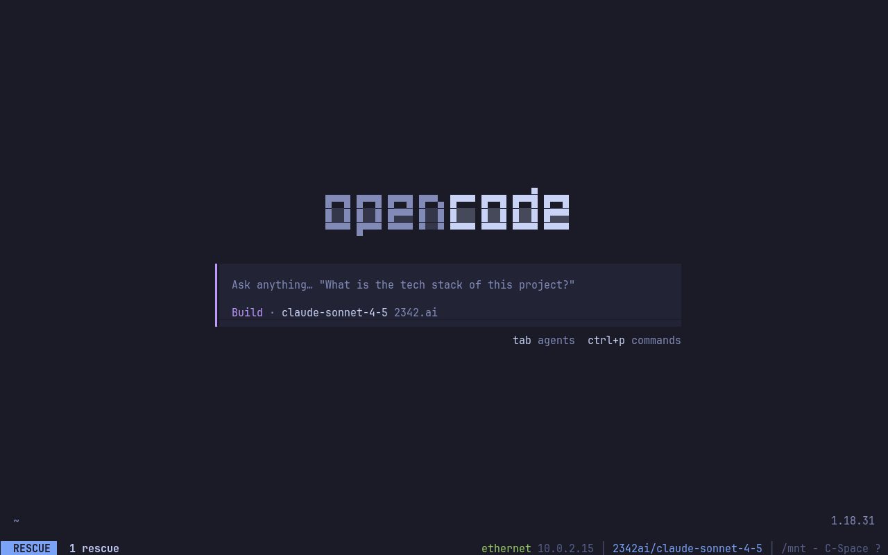

Three agents, one console
opencode, Claude Code and Codex are installed and briefed: where they are, how installed systems look from the outside, and the rules.
NixOS live system · opencode · Claude Code · Codex
Boot it on the machine that will not start. The agent mounts the installed system read-only, reads the logs with you and asks before it changes anything. Your key goes into the image before it ever boots.
opencode, Claude Code and Codex are installed and briefed: where they are, how installed systems look from the outside, and the rules.
2342.ai speaks the OpenAI, Responses and Anthropic formats. Groq, Google AI Studio and OpenRouter work too, with free tiers.
Key, Wi-Fi, SSH key and keyboard layout go into a 16 KiB slot in the image, right here in your browser. Nothing is sent anywhere.
ZFS, Btrfs, ext4, XFS, NTFS, LUKS, LVM, mdadm. rescue-mount finds the installed system and mounts it read-only first.
Enter a key or finish a Claude or Codex sign-in by scanning a QR code. Follow the console in your phone's browser.
Read-only first. Destructive commands only after an explicit yes. A backup of every file before it is edited.
Real screenshots of v0.1.0 in a VM. No desktop, no installer: a console that is ready to work.



Three steps. Your key stays in this browser tab and in the file you save.
When the download has finished, drop the ISO here. The page finds the configuration slot and saves a copy with your key inside. Takes seconds, nothing is uploaded.
Then write the ISO to a USB stick with dd, balenaEtcher, Rufus or Ventoy, and boot it. Whoever holds the stick holds the key: create a key just for the stick and give it a budget.
No key in the image? Press C-Space k at the console and type it on your phone via QR code. Claude and Codex subscribers sign in the same way.
Claude Code and Codex also accept their own subscription sign-in at the console.
One Nix flake. Build the image, patch the slot, or bake your configuration in at build time.
nix build github:2342-ai/agentic-rescue#iso
nix run github:2342-ai/agentic-rescue#patch -- result/iso/*.iso \
--provider groq --key gsk_… --wifi "Home" "secret" -o my-rescue.iso